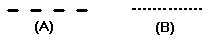

Example: formatting a new drawing
You can use styles to make new drawings conform to your company standards. For example, Solid Edge provides line styles with names such as Visible and Hidden. The Hidden style has a line type that looks like a dashed line (A). Your company standard may require that a hidden line look like a dotted line (B).

To change the Hidden line style to conform to your company's standards, follow these steps:
-
Choose the View tab→Style group→Styles command.
-
In the Style dialog box, click the Line style type in the Style Type box.
-
In the Styles list box, click Hidden line style in the line Styles list.
-
Click Modify to access the Modify Line Style dialog box.
-
On the General tab, in the Type box, select the line type that looks like a dotted line.
All the lines that you draw while the Hidden style is selected on the command bar will conform to your company's standards: hidden lines will appear as dotted lines. You can save the style to a template with the Styles command. This allows you to use the style again in other drawings.
How do I
Create or modify a drawing view styleMap drawing view styles
Example: formatting an existing drawing